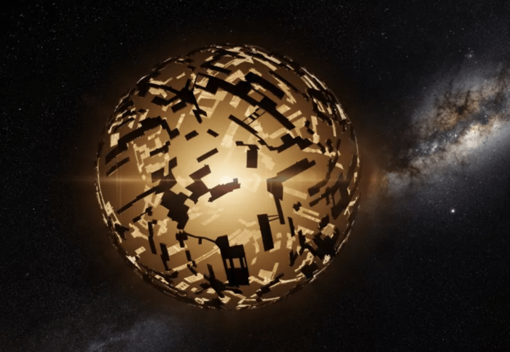
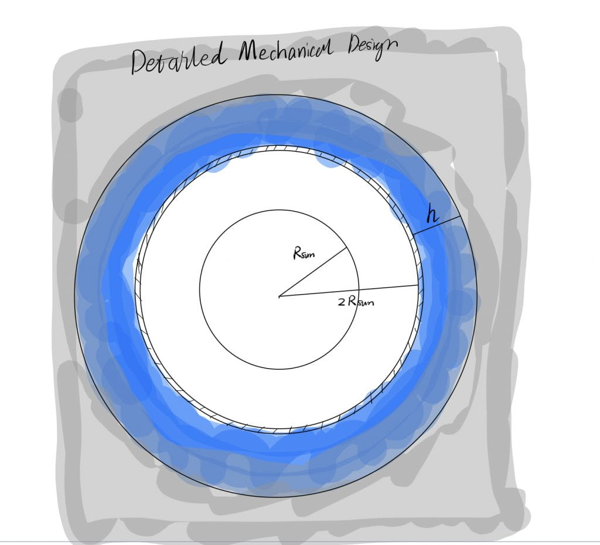

I am a normal citizen living in the Victorian era, and steam engine is the most powerful engine I have ever known. Science is such a good thing! I want to maximize the application of the steam engine to increase the productivity of the whole society and then to improve our lives. Sun seems to be a wonderful heat source! In my imagination, in order to fully exploit the solar energy, I will build a sphere that completely encompasses the sun (see Dyson sphere.) and can 100% absorb the radiant energy without any reflection at any wavelength. I want to know if this idea is practical. Regardless of the materials and construction, the first thing I am concerned about is how much water this steam engine needs. All I know is some common senses.
Settings:
Assumptions:
Basic Idea:

An artist's rendition of what a Dyson sphere might look like.
(Image: © dottedhippo/iStock/Getty Images Plus)
1.Question:
If I build a solar-powered steam engine that encompasses the sun and can completely exploit the solar radiant energy, how much water will this steam engine need? Is the water in the Earth enough to do that? (If we can transport the water to space as much as we want.)2.Wild Guess:
I would use the unit of Earth-mass rather than SI. Because my intuition cannot work with SI for this scale. I would say it should be more than 1 Earth-mass but less than 100 Earth-mass. So I take the geometry mean value, which is 10 Earth mass. So I suppose that this idea will be proven to be impracticable, even if we just take the first step to consider the amount of water that the steam engine need.3.Educated Guess:

Figure 1: The steam engine is in the shape of a sphere shell and the inside diameter is 2*Solar-radius. The blue ring is the water stored in the tank which can be vaporized. The outer gray range is the detailed mechanical design that I ignored in the following analysis.
- The material of the steam engine is ideal and it can 100% absorb the radiant energy without any reflection at any wavelength.
- The water tank is in the shape of a sphere shell (Figure1). The inside diameter is 2 Solar-Radius(R_sun).
- I ignore the detailed cycle in the steam engine but only consider the evaporation and the reflux of the condensate.
- I am not familiar with the mechanism of steam engine, and I was wondering the percentage of the heat absorbed that is used for evaporation. I suppose there will be a portion of heat used to propel the gas expansion. But in this case, I assume that all of the heat is used for evaporation.
- The latent heat of water is constant.
- Based on my assumptions, the flux of needed water is determined by the heat flux. Based on the conservation of energy, during a certain time period, the incident heat should equal the energy consumed by the evaporation of water.
- If we know the flux of water, we could obtain the total mass of needed water per square meter, considering the time duration of one cycle.
- We can convert the mass of water needed per unit area on Sun to that on Earth's surface, by thingking about putting the total water needed on Earth's surface. Because we know that solar radius is about 100 times larger than Earth's radius. Then we can draw a conclusion on whether the water on Earth is enough to achieve that or not by thinking about the depth of the liquid layer.
- * If we know the solar radius, we can calculate the total mass of water needed.
4. Variables and Formulas:
- F_sun [J/(s*m^2)] = L [J/kg] * M2_w[kg/(m^2*s)]
- F_sun: Incident solar flux.
- L: latent heat of the water per kilogram.
- M2_w: the mass of water needed per square meter per second.
- M2_w[kg/(m^2*s)] * P [s] = M1_w[kg/(m^2)]
- M1_w: the mass of water needed per square meter.
- P: the period of the steam engine's cycle. (i.e how long it takes for the water vapor to condense and go back to the gas tank.)
- M1_wE [[kg/(m^2)]] * 4π * R_earth[m]^2 = M1_w[kg/(m^2)] * 4π * R_sun[m]^2
- M1_wE: the mass of water per square meter on Earth if all of the water needed covers the Earth's surface.
- R_earth: Earth radius.
- R_sun: solar radius
- M1_w[kg/(m^2)] * 4π * R_sun[m]^2 = M_w [kg]
-
- M_w: The total mass of water needed.
-
4.1 Estimation:
- F_sun [J/(s*m^2)] = L [J/kg] * M2_w[kg/(m^2*s)]
- F_sun[J/(s*m^2)]:
- I know the solar constant (Sc)is about 1300W/m^2.
- I learned that my little finger at an arm’s length is about 1◦ wide, and I used it to estimate the sun’s angular distance (on a cloudy day). And it's approximately θ = 0.5◦ = π/ 360
- Using the basic geometry relation:
- R_sun/d = tan(θ/2)= θ/2 = 0.004,
- where d is the distance between Earth and Sun.
- According to the conservation of energy, and the radius of the engine sphere is 2R_sun:
- F_sun * 4π * (2*R_sun)^2 = Sc * 4π * d^2
- So,
- F_sun = Sc *(1/2*d/R_sun)^2 = 2.03 *10^7W/m^2
- L [J/kg]:
- I estimate L as a thought experiment: I imagine that I put a mug of water in the microwave oven and boil all the water away. I estimate the time it would take the just boiling water to boil away completely. A big mug could be 1/2 liter(dm^3) and the density of water is 1g/cm^3. I would say the time needed to evaporate a big mug of water should be more than 10 minutes but less than 30 minutes. Then I take the geometry mean value, which is about 17 minutes. So the mass loss rate is
- dm/dt = 0.5kg/17 minutes = 5*10^(-4) kg/s
- Given of the power of microwave is around 1000 W, the latent heat should be
- L = P/(dm/dt) = 2* 10^6 J/kg
- I estimate L as a thought experiment: I imagine that I put a mug of water in the microwave oven and boil all the water away. I estimate the time it would take the just boiling water to boil away completely. A big mug could be 1/2 liter(dm^3) and the density of water is 1g/cm^3. I would say the time needed to evaporate a big mug of water should be more than 10 minutes but less than 30 minutes. Then I take the geometry mean value, which is about 17 minutes. So the mass loss rate is
- M2_w[kg/(m^2*s)]
- M2_w = F_sun/L = 10.15 kg/(m^2*s)
- F_sun[J/(s*m^2)]:
- M2_w[kg/(m^2*s)] * P [s] = M1_w[kg/(m^2)]
- The period of steam engine's cycle is difficult to estimate for me. So I will give a wide range from 1 day to 1 year, then
- M1_w_lower = M2_w*P = 8*10^5[kg/(m^2)]
- M1_w_upper = M2_w*P = 3*10^8[kg/(m^2)]
- M1_wE [[kg/(m^2)]] * 4π * R_Earth[m]^2 = M1_w[kg/(m^2)] * 4π * R_sun[m]^2
- Although I don't know the Solar-radius nor Earth-radius, I know the ratio between them is about 100. So,
- M1_wE = M1_w*(R_Earth/R_sun)^2 = M1_w*10^4
- M1_wE_lower = 8*10^9[kg/(m^2)]
- M1_wE_upper = 3*10^12[kg/(m^2)]
- The density of water(ρ) is 10^3 kg/m^3, so that's say if the Earth is completely covered by the water, the averaged depth of the ocean(H) should be:
- H_lower = M1_wE_lower/ρ = 8*10^6 m
- H_lower = M1_wE_lower/ρ = 3*10^9 m
- Even the lower limit is unrealistic. So we can draw the conclusion that we clearly don't have enough water to supply this huge engine.
5. Gathering Data:
- The variable with star(*) is the accurate value that I look up or the one calculated using the accurate value.
- To get the accurate value of mass loss rate of liquid water per unit area(M2_w):
- F_sun ~ 2.03 *10^7 [J/(s*m^2)]
- I didn’t find the radiation flux of the sun’s photosphere, but according to wikipedia, the sun’s luminosity is,
- L*= 3.828 × 10^26W;
- And the solar radius is,
- R_sun* = 6.96*10^8m
- So, the solar flus is
- F_sun* = L*/( 4π * (2*R_sun)^2) = 1.57*10^7 [J/(s*m^2)]
- They are of the same order of magnitude!
- L ~ 2*10^6 [J/kg]
- According to wikipedia, the specific latent heats of water at standard pressure:
- L* = 2.264 *10^6 J/kg
- Wow, this one is pretty close!
- M2_w ~ 10.15 kg/(m^2*s)
- M2_w* = F_sun*/L* = 6.93 kg/(m^2*s)
- Yes, the same order of magnitude!
- F_sun ~ 2.03 *10^7 [J/(s*m^2)]
- Once we get the right M2_w, the analysis regarding ocean height can stand should be tenable, given that R_sun is 109 R_earth, which is pretty close to and slightly larger than our estimation of 100. So the lower limit of the ocean depth should be >~ 8*10^6 m, which is comparable to the Earth radius (6.4*10^6m). So we can confidently claim that there is no enough water on Earth to supply the solar steam engine.
- To get the amount of water that the engine need. M1_w[kg/(m^2)] * 4π * R_sun[m]^2 = M_w [kg]
- M_w_lower* = 4.89*10^24kg
- M_w_upper* = 1.8*10^27kg
- Earth mass is 5.97*10^24kg, so the amount of water we need is 1~300 Earth-mass, which is impracticable.
6. Conclusions:
6.1 Uncertainties:
- I am not sure about the change of phase temperatures of water in a vacuum, neither the pressure. So I am not sure if the latent heat of water at standard pressure is applicable.
- I am not sure how long it takes for the water vapor to condense and go back to the gas tank. If the time is far longer or shorter than the boundary I set, it will be a problem.
- The percentage of the heat absorbed that is used for evaporation is 100% in this case, but there could be a portion of heat used to propel the gas expansion, which will reduce the water amount.